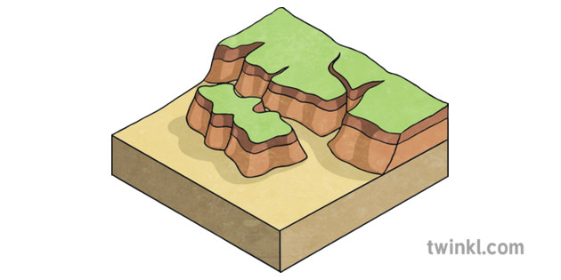
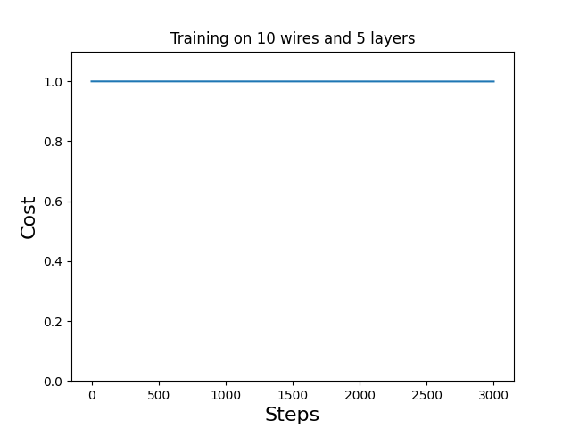
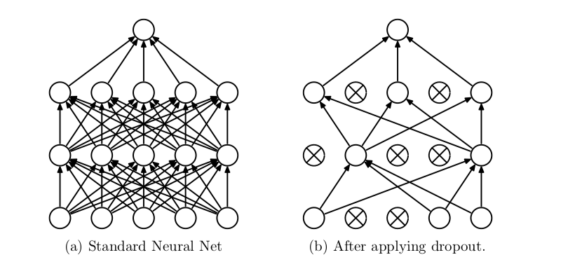

Motivation
- It is not about the difficulty of climbing plateaus, but leaving them during optimization processes.

Motivation
- Barren plateaus (but also local minima) can have a big impact on trainability for parameterized quantum circuits

Idea
- Dropouts are being used in Machine Learning
- Preventing overfitting
- Helping to train all parts of the Neural Network
